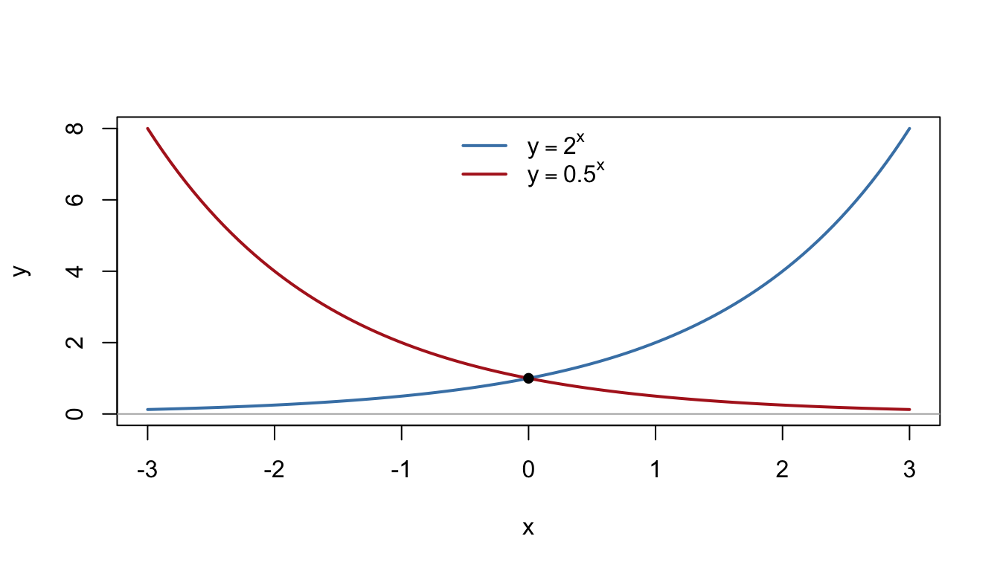
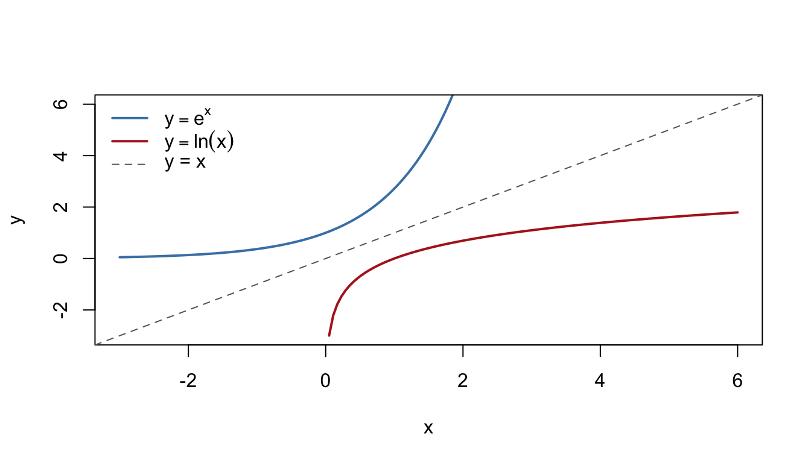
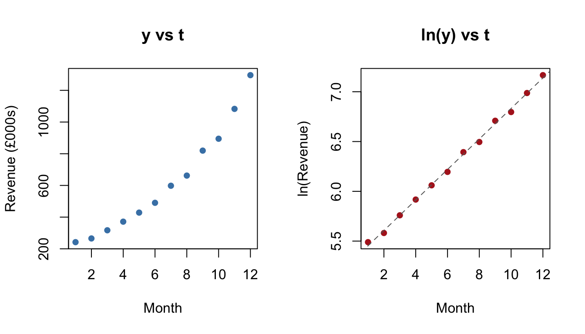
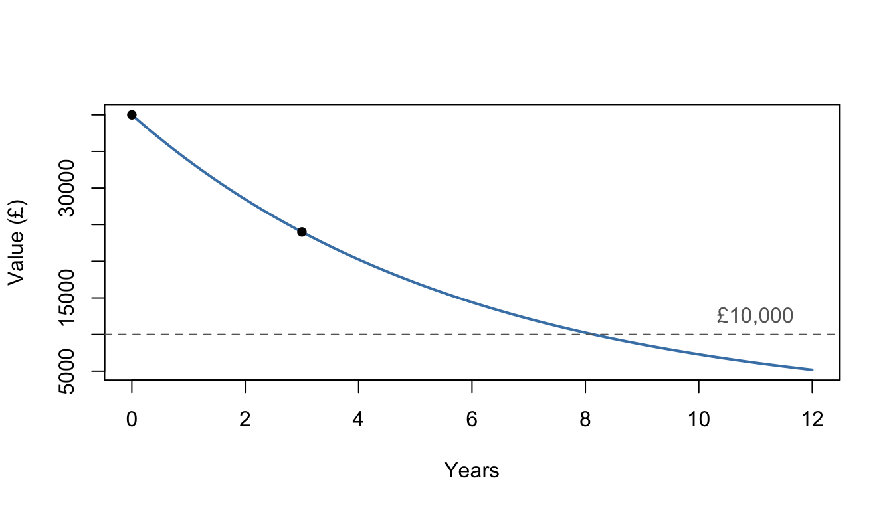

6 Exponentials and Logarithms
Chapter 5 kept running into the same wall: we could build growth models like \(2000 \times 1.04^n\), but questions such as "when does the investment reach £3,000?" needed trial and improvement. This chapter removes the wall. Exponential functions describe constant-percentage growth and decay; logarithms are their inverses, and they turn "how long until…?" into a one-line calculation.
Why this matters: Growth rates, compounding, discounting, doubling times and log-transformed data are everywhere in Management Science. In econometrics, entire models are built on logarithms — the coefficients of a log-log regression are elasticities, a concept you will use constantly. Fluency here is not optional; it's foundational.
6.1 Exponential functions
6.1.1 Key idea
An exponential function has the variable in the exponent: \(y = a^x\) for a base \(a > 0\). Key features, for \(a > 1\):
- passes through \((0, 1)\) — anything to the power zero is 1;
- grows without bound as \(x \to \infty\), and decays towards the horizontal asymptote \(y = 0\) as \(x \to -\infty\);
- multiplies by the same factor \(a\) for each unit step in \(x\) — constant percentage growth.
For \(0 < a < 1\) the picture reflects: \(y = 0.85^x\) decays. The most important base is the special number \(e \approx 2.71828\), giving the natural exponential function \(e^x\) — "natural" because, as you'll see in Chapter 7, \(e^x\) is the function whose rate of change equals its own value. Continuous growth at rate \(r\) is modelled by \(e^{rt}\).

Figure 6.1: Exponential growth and decay: both pass through (0, 1) and hug the x-axis on one side.
6.1.2 Worked examples
Example (simple). Sketch \(y = 2^x\) and \(y = 2^{-x}\) on the same axes.
Both pass through \((0, 1)\) with asymptote \(y = 0\). \(2^x\) climbs to the right; \(2^{-x} = (0.5)^x\) is its mirror image in the \(y\)-axis, decaying to the right.
Example (moderate). A quantity grows by 8% each year. Express it as an exponential function of time and find the overall growth factor over a decade.
Growth by 8% means multiplying by \(1.08\) each year: \(y = A \times 1.08^t\), where \(A\) is the starting value. Over 10 years the factor is \(1.08^{10} \approx 2.159\) — the quantity more than doubles. (Not \(1.8\): percentages compound, as Chapter 5 warned.)
Example (challenging — why \(e\)?). £1 is invested for one year at a nominal 100% interest rate. Compare the final value if interest is credited (a) once, (b) quarterly, (c) monthly, (d) daily.
Compounding \(n\) times means \(n\) instalments of rate \(\tfrac{1}{n}\):
\[\left(1 + \tfrac{1}{1}\right)^1 = 2, \quad \left(1 + \tfrac{1}{4}\right)^4 \approx 2.441, \quad \left(1 + \tfrac{1}{12}\right)^{12} \approx 2.613, \quad \left(1 + \tfrac{1}{365}\right)^{365} \approx 2.715.\]
More frequent compounding helps — but with rapidly diminishing returns, and the values are creeping towards a ceiling: \(e \approx 2.71828\). That is \(e\)'s job description — the limit of compounding continuously — and it is why continuous growth models use \(e^{rt}\).
6.1.3 Practice exercises
- Sketch \(y = 3^x\) and \(y = 3^{-x}\) on the same axes, marking the common point and stating the asymptote.
- State the range of \(y = e^x\), and the value of \(e^0\).
- A market grows by 12% per year from a size of £40m. Write the model and find the market size after 6 years, to 1 d.p.
Common mistakes:
- \(2^x\) is nothing like \(x^2\): one has a variable exponent, the other a fixed one. Their graphs, growth rates and uses are completely different.
- Exponential functions are never zero or negative: \(e^x > 0\) for every \(x\). The asymptote is approached, not touched.
- "Grows by 8% per year for 10 years" is a factor of \(1.08^{10}\), not \(1 + 0.08 \times 10\).
6.2 Logarithms
6.2.1 Key idea
The logarithm answers the question "what power?":
\[\log_a x = y \quad \Longleftrightarrow \quad a^y = x.\]
So \(\log_2 32 = 5\) because \(2^5 = 32\). In the language of Section 3.6, \(\log_a x\) is the inverse function of \(a^x\): its graph is the reflection of the exponential in the line \(y = x\), its domain is \(x > 0\) (you can only take logs of positive numbers), and it has a vertical asymptote at \(x = 0\).
The natural logarithm \(\ln x = \log_e x\) inverts \(e^x\), and is the default log at university. Two facts worth memorising: \(\log_a 1 = 0\) and \(\log_a a = 1\).

Figure 6.2: ln(x) is the mirror image of e^x in the line y = x.
6.2.2 Worked examples
Example (simple). Evaluate \(\log_2 32\), \(\log_{10} 1000\) and \(\log_7 1\).
\(\log_2 32 = 5\) (since \(2^5 = 32\)); \(\log_{10} 1000 = 3\); \(\log_7 1 = 0\).
Example (moderate). Solve \(\ln x = 3\), giving an exact answer and a 3 s.f. approximation.
Apply the inverse: \(x = e^3 \approx 20.1\).
Example (challenging — reading a log scale). A stock index is plotted on a logarithmic vertical axis, and its graph over 30 years is close to a straight line. What does that tell you? And why do analysts prefer log axes for long price histories?
A straight line on a log axis means \(\ln(\text{index})\) grows linearly, i.e. the index itself grows exponentially — a constant percentage per year. Log axes make equal percentage moves take equal vertical space: a rise from 100 to 200 looks the same size as a rise from 1,000 to 2,000, which is exactly how investors experience returns. On an ordinary axis, early history is squashed flat and recent moves look wildly dramatic even when the growth rate hasn't changed.
6.2.3 Practice exercises
- Evaluate \(\log_3 81\), \(\log_{10} 0.01\) and \(\log_5 5\).
- Solve \(\ln x = 2\), exactly and to 3 d.p.
- Write \(2^6 = 64\) in logarithmic form.
Common mistakes:
- \(\ln 0\) and logs of negative numbers do not exist — watch for "solutions" that would require them.
- \(\log_{10}\) and \(\ln\) are different logs. Calculators and textbooks vary in what plain "\(\log\)" means: at university it often means \(\ln\).
- \(\log_a x\) is an exponent, so it can happily be negative (e.g. \(\log_{10} 0.01 = -2\)) — a negative log does not mean the log of a negative number.
View the full playlist on YouTube
Self-check: logarithms
Q1. Evaluate \(\log_2 64\):
Q2. Evaluate \(\log_{10} 0.001\):
Q3. Which of the following is \(5^3 = 125\) written in logarithmic form?
- \(\log_3 125 = 5\)
- \(\log_5 125 = 3\)
- \(\log_{125} 5 = 3\)
- \(\log_5 3 = 125\)
Answer:
Q4. Solve \(\ln x = 4\), giving \(x\) to 1 d.p.:
Q5. For which values of \(x\) is \(\ln(x - 3)\) defined?
Q1. \(6\), since \(2^6 = 64\).
Q2. \(-3\), since \(0.001 = 10^{-3}\). A negative log is perfectly fine — it is the log of a negative number that does not exist.
Q3. (B). Read \(5^3 = 125\) as "the power you raise \(5\) to, to get \(125\), is \(3\)": \(\log_5 125 = 3\). Option (A) swaps the base with the answer; (C) swaps the base with the argument. Check by converting back: (B) says \(5^3 = 125\). ✓
Q4. Apply the inverse function: \(x = e^4 \approx 54.6\). Dividing by \(\ln\) is not an operation — undo a log by exponentiating.
Q5. \(x > 3\): the argument must satisfy \(x - 3 > 0\), strictly. The near-miss "\(x \ge 3\)" fails at the endpoint because \(\ln 0\) does not exist, and "\(x > 0\)" forgets that it is \(x - 3\), not \(x\), inside the log.
6.3 Laws of logarithms
6.3.1 Key idea
Because logs are exponents, the index laws of Section 2.1 translate directly:
\[\log_a(xy) = \log_a x + \log_a y, \qquad \log_a\!\left(\frac{x}{y}\right) = \log_a x - \log_a y, \qquad \log_a(x^k) = k\log_a x.\]
Multiplication becomes addition, division becomes subtraction, powers come down as multipliers. The power law is the star: it is what lets logs pull an unknown out of an exponent.
6.3.2 Worked examples
Example (simple). Write \(\log a + 3\log b\) as a single logarithm.
\(\log a + \log b^3 = \log(ab^3)\).
Example (moderate). Expand \(\ln\!\left(\dfrac{x^2 \sqrt{y}}{z}\right)\).
\[\ln x^2 + \ln y^{1/2} - \ln z = 2\ln x + \tfrac{1}{2}\ln y - \ln z.\]
Example (challenging). Solve \(\log_2 x + \log_2 (x - 6) = 4\).
Combine: \(\log_2\big(x(x-6)\big) = 4\), so \(x(x - 6) = 2^4 = 16\):
\[x^2 - 6x - 16 = 0 \;\Rightarrow\; (x - 8)(x + 2) = 0 \;\Rightarrow\; x = 8 \text{ or } x = -2.\]
But check the original equation: \(x = -2\) would require the log of a negative number, which doesn't exist. The only solution is \(x = 8\). Always audition your solutions in the original equation when logs are involved.
6.3.3 Practice exercises
- Write \(\log a + 3\log b - \log c\) as a single logarithm.
- Expand \(\ln\!\left(\dfrac{x^2}{y}\right)\).
- Solve \(\log_3 x + \log_3(x + 2) = 1\).
Common mistakes:
- \(\log(x + y)\) has no expansion. The laws handle products, quotients and powers — never sums inside the log.
- \(\dfrac{\log x}{\log y} \ne \log\!\left(\dfrac{x}{y}\right)\): the quotient law is about a quotient inside one log, not a ratio of two logs.
- Rejecting (or forgetting to reject) invalid solutions: substitute back and check every log's argument is positive.
Self-check: laws of logarithms
Q1. Which of the following equals \(\log a + 2\log b\)?
- \(\log(ab^2)\)
- \(\log(a + b^2)\)
- \(2\log(ab)\)
- \(\log(2ab)\)
Answer:
Q2. Which of the following is the full expansion of \(\ln\!\left(\dfrac{x^3}{y}\right)\)?
- \(3\ln x + \ln y\)
- \(\dfrac{\ln x^3}{\ln y}\)
- \(3(\ln x - \ln y)\)
- \(3\ln x - \ln y\)
Answer:
Q3. \(\log(x + y)\) can be rewritten as:
Q4. Solve \(\log_2 x + \log_2(x - 2) = 3\). \(x =\)
Q5. The quadratic in Q4 produces a second candidate solution, which is rejected because:
Q1. (A). The power law turns \(2\log b\) into \(\log b^2\), then the product law combines: \(\log(ab^2)\). Option (B) is the illegal "log of a sum" move run in reverse — the laws never manufacture a \(+\) inside a log.
Q2. (D). Quotient law, then power law: \(\ln x^3 - \ln y = 3\ln x - \ln y\). Option (B) is the classic trap: the quotient law is about a quotient inside one log, not a ratio of two logs.
Q3. Neither — \(\log(x + y)\) has no expansion. The laws handle products, quotients and powers only. (Quick disproof by counterexample: \(\log_{10}(10 + 90) = 2\), but \(\log_{10} 10 + \log_{10} 90 \approx 2.95\).)
Q4. \(x = 4\). Combine: \(\log_2\big(x(x-2)\big) = 3\), so \(x(x-2) = 8\), giving \(x^2 - 2x - 8 = (x-4)(x+2) = 0\). Check in the original equation: \(\log_2 4 + \log_2 2 = 2 + 1 = 3\). ✓
Q5. \(x = -2\) would require \(\log_2(-2)\), which does not exist. Note the reason carefully: it is not that negative answers are banned in general — it is that this one makes a log's argument negative. Always audition candidates in the original equation.
6.4 Exponential equations
6.4.1 Key idea
To solve \(a^x = b\), take logs of both sides and use the power law:
\[a^x = b \;\Rightarrow\; x \ln a = \ln b \;\Rightarrow\; x = \frac{\ln b}{\ln a}.\]
Any log base works; \(\ln\) is the convention. This is the tool Chapter 5 was missing.
6.4.2 Worked examples
Example (simple). Solve \(3^x = 20\), to 3 d.p.
\(x = \dfrac{\ln 20}{\ln 3} = \dfrac{2.9957\ldots}{1.0986\ldots} \approx 2.727.\)
Example (moderate). Solve \(5 \times 2^{3x} = 40\).
Isolate the exponential first: \(2^{3x} = 8 = 2^3\), so \(3x = 3\) and \(x = 1\). (No calculator needed — always check whether both sides share a base before reaching for logs.)
Example (challenging — settling Chapter 5's accounts). (a) £2,000 grows at 4% per year. Exactly when does it reach £3,000? (b) The loan of Section 5.6 cleared when \(1.01^n = 1.25\); find \(n\). (c) How long does money take to double at 6% per year?
\(1.04^n = 1.5 \Rightarrow n = \dfrac{\ln 1.5}{\ln 1.04} \approx 10.34\) years — so the balance first exceeds £3,000 after the 11th year's interest, matching the trial-and-improvement answer, but now with no trials.
\(n = \dfrac{\ln 1.25}{\ln 1.01} \approx 22.4\) months: 22 full payments and a smaller 23rd.
\(1.06^n = 2 \Rightarrow n = \dfrac{\ln 2}{\ln 1.06} \approx 11.9\) years. Bankers approximate this with the rule of 72: doubling time \(\approx 72/\) (rate in %) \(= 72/6 = 12\) years. Now you know where the rule comes from — and how to beat it for accuracy.
6.4.3 Practice exercises
- Solve \(4^x = 30\), to 3 d.p.
- Solve \(7 \times 3^x = 189\) exactly.
- £3,000 is invested at 5% per year. After how many complete years does it first exceed £5,000?
Common mistakes:
- Take logs of the whole side: from \(5 \times 2^x = 40\) you may divide by 5 first, or write \(\ln 5 + x\ln 2 = \ln 40\) — but bundling the 5 into the exponent is wrong.
- \(\dfrac{\ln 20}{\ln 3}\) is not \(\ln\!\left(\dfrac{20}{3}\right)\) — see the laws above.
- "After how many complete years" usually means rounding up: growth worth \(10.34\) years needs the 11th year to finish the job.
View the full playlist on YouTube
Why this matters: Doubling times, payback periods, "when does the debt clear?", "when does demand fall below the viable threshold?" — a huge share of practical business questions have the form \(a^x = b\). You now solve them exactly, in one line.
6.5 Log transformations
6.5.1 Key idea
Logs turn curved relationships into straight lines — and Chapter 4 taught you everything about straight lines. Two patterns cover most cases:
- Power law \(y = ax^n\). Taking logs of both sides: \[\log y = \log a + n \log x.\] Plot \(\log y\) against \(\log x\) (a log–log plot): a straight line with gradient \(n\) and intercept \(\log a\).
- Exponential law \(y = ab^x\). Taking logs: \[\log y = \log a + (\log b)\,x.\] Plot \(\log y\) against \(x\) (a semi-log plot): a straight line with gradient \(\log b\) and intercept \(\log a\).
So the shape of the straightened plot diagnoses the model, and the fitted line's gradient and intercept recover the parameters.
6.5.2 Worked examples
Example (simple). Data follow \(y = ax^n\). Which plot straightens them, and what do the gradient and intercept give you?
Plot \(\log y\) against \(\log x\); the gradient is \(n\) and the intercept is \(\log a\) (so \(a = 10^{\text{intercept}}\) if using base-10 logs).
Example (moderate). A log–log plot (base 10) of output \(y\) against workforce \(x\) is a straight line with gradient \(0.5\) and intercept \(0.6\). Find the underlying model.
\(n = 0.5\) and \(\log_{10} a = 0.6\), so \(a = 10^{0.6} \approx 3.98\):
\[y \approx 3.98\,x^{0.5} = 3.98\sqrt{x}.\]
A square-root production function: output rises with workforce, but with diminishing returns — each extra worker adds less than the last. (You'll meet this idea properly as diminishing marginal product.)
Example (challenging — measuring a growth rate from data). A start-up's monthly revenue \(y\) (£000s) is recorded over a year. Plotting \(\ln y\) against month \(t\) gives a near-perfect straight line with gradient \(0.15\) and intercept \(5.3\). Find the model, and state the monthly growth rate.
Semi-log straight line means exponential growth: \(\ln y = 5.3 + 0.15t\), so
\[y = e^{5.3}\,e^{0.15t} \approx 200\,e^{0.15t}.\]
Revenue started around £200k and grows continuously at rate \(0.15\) per month — an actual month-on-month growth of \(e^{0.15} - 1 \approx 16.2\%\) (not 15%: for small rates the two are close, but they are not the same thing). This fit-a-line-to-logged-data routine is exactly how growth rates are estimated in practice.

Figure 6.3: The same exponential data on a natural scale (curved) and after taking logs (straight).
6.5.3 Practice exercises
- Data follow \(y = ax^n\), and the log–log plot (base 10) has gradient \(1.5\) and intercept \(0.6\). Find \(a\) and \(n\).
- Data follow \(y = ab^x\), and the plot of \(\ln y\) against \(x\) has gradient \(0.2\) and intercept \(3\). Find \(a\) and \(b\) to 3 s.f.
- Which plot would straighten data following \(y = 5x^3\) — \(\ln y\) against \(x\), or \(\ln y\) against \(\ln x\)? What gradient would you expect?
Common mistakes:
- Matching the wrong plot to the wrong law: power laws straighten on log–log; exponentials on semi-log. If you're unsure, try both — only the right one gives a line.
- The intercept is \(\log a\), not \(a\): remember to un-log it at the end.
- Mixing bases mid-calculation: if you fitted with \(\ln\), un-log with \(e\); if with \(\log_{10}\), un-log with powers of 10.
Why this matters: This section is a preview of econometrics. Regressions on logged variables dominate empirical work in economics and business, because gradients of logged models have beautiful meanings: in a log–log model the gradient is an elasticity (the % change in \(y\) per 1% change in \(x\)), and in a semi-log model it is (approximately) a growth rate. When you meet these in second year, you'll already know why the logs are there.
6.6 Growth and decay models
6.6.1 Key idea
The standard continuous models are
\[\text{growth: } P(t) = P_0\,e^{kt} \;(k > 0), \qquad \text{decay: } P(t) = P_0\,e^{-kt} \;(k > 0),\]
with discrete cousins \(P_0(1 + r)^t\) and \(P_0(1 - r)^t\). The modelling workflow is always: use the given information to pin down the constants, answer the question with logs, then criticise — real quantities don't grow exponentially forever (markets saturate, competitors arrive, resources run out), so state the range over which the model is credible.
6.6.2 Worked examples
Example (simple). A city's population is modelled by \(P(t) = 2.5\,e^{0.02t}\) million, \(t\) years from now. Find the population in 10 years and interpret the constant \(0.02\).
\(P(10) = 2.5\,e^{0.2} \approx 3.05\) million. The constant is the continuous growth rate: roughly 2% per year (exactly \(e^{0.02} - 1 \approx 2.02\%\) per year).
Example (moderate). For the same city, when does the population double?
\[2.5\,e^{0.02t} = 5 \;\Rightarrow\; e^{0.02t} = 2 \;\Rightarrow\; t = \frac{\ln 2}{0.02} \approx 34.7 \text{ years}.\]
Note the elegant general fact: doubling time \(= \dfrac{\ln 2}{k}\), whatever the starting size.
Example (challenging — fitting and using a decay model). A machine bought for £40,000 is worth £24,000 after 3 years. Assuming exponential decay \(V(t) = 40000\,e^{-kt}\): (a) find \(k\); (b) find when the value falls below £10,000; (c) give one reason the model may misvalue the machine at each end of its life.
\(e^{-3k} = \dfrac{24000}{40000} = 0.6\), so \(-3k = \ln 0.6\) and \(k = -\dfrac{\ln 0.6}{3} \approx 0.170\).
We need \(e^{-kt} = \dfrac{10000}{40000} = 0.25\), so \(t = \dfrac{\ln 4}{k} \approx \dfrac{1.386}{0.170} \approx 8.1\) years.
Early on, real resale values often drop faster than any smooth model (the "drive it off the forecourt" effect); late on, the model decays towards zero but a real machine keeps a scrap or salvage value floor. The exponential is a good middle-of-life approximation — say so when you use it.

Figure 6.4: Exponential depreciation fitted through two known values, with the £10,000 threshold marked.
6.6.3 Practice exercises
- £800 is invested at 6% per year compound. Find its value after 10 years, to the nearest pound.
- A population of 3.2 million grows at 1.5% per year. Find its doubling time, to the nearest year.
- A machine's value is \(V(t) = 30000\,e^{-0.12t}\). Find its value after 5 years, and the time at which the value first falls below £15,000.
Common mistakes:
- Confusing the continuous rate \(k\) with the annual percentage: \(e^{0.15}\) growth is 16.2% per year, not 15%. For small rates the gap is small, but interviewers and examiners both enjoy this distinction.
- Solving \(e^{-kt} = 0.25\) by "dividing by \(e\)" — the inverse of exponentiation is the logarithm, not division.
- Trusting a fitted model far outside the data used to fit it. Two data points fit an exponential perfectly; they do not make it true.
Why this matters: Growth and decay models power forecasting, valuation and depreciation schedules — and their honest limitations motivate the differential equations of Chapters 7 and 8, where "growth proportional to size" is derived rather than assumed, and richer models (like saturating growth) become available.
6.7 Chapter summary
You should now be able to:
- sketch and interpret exponential functions, including \(e^x\), and explain where \(e\) comes from;
- convert between exponential and logarithmic forms and evaluate simple logs;
- apply the product, quotient and power laws of logarithms, checking solutions for validity;
- solve equations of the form \(a^x = b\) exactly, including doubling-time and "years to reach a target" problems;
- use log–log and semi-log transformations to diagnose power and exponential models and estimate their parameters;
- build, use and criticise growth and decay models.
With straight lines, quadratics, sequences and exponentials in hand, you have the full library of A-level model shapes. Chapter 7 adds the tool that analyses all of them at once: the derivative.
6.8 End of chapter quiz
Treat this as a compass, not a verdict — it points at anything worth one more pass before Chapter 7.
Q1. Every graph \(y = a^x\) (for \(a > 0\)) passes through the same fixed point. Which one?
Q2. A market worth £50m grows by 10% per year. Its size after 5 years, in £m to 1 d.p., is
Q3. Evaluate \(\log_3 81\):
Q4. Which of the following is \(3^4 = 81\) written in logarithmic form?
- \(\log_4 81 = 3\)
- \(\log_{81} 3 = 4\)
- \(\log_3 81 = 4\)
- \(\log_3 4 = 81\)
Answer:
Q5. Which of the following equals \(2\log x - \log y\)?
- \(\log(x^2 - y)\)
- \(\log\!\left(\dfrac{x^2}{y}\right)\)
- \(\log\!\left(\dfrac{2x}{y}\right)\)
- \(\dfrac{\log x^2}{\log y}\)
Answer:
Q6. Solve \(\log_5 x + \log_5(x + 4) = 1\). \(x =\)
Q7. Solve \(2^x = 10\), giving \(x\) to 3 d.p.:
Q8. £4,000 is invested at 5% per year compound. After how many complete years does it first exceed £6,000?
Q9. Data follow a power law \(y = ax^n\), and the log–log plot (base 10) is a straight line with gradient \(2\) and intercept \(0.9\). Then \(n =\) and, to 3 s.f., \(a =\)
Q10. Which plot straightens data following the exponential law \(y = ab^x\)?
Q11. A population follows \(P(t) = 6\,e^{0.03t}\) million. Its doubling time, in years to 1 d.p., is
Q12. In the model \(P(t) = P_0\,e^{0.03t}\) (\(t\) in years), the actual growth per year is:
Q1. \((0, 1)\): \(a^0 = 1\) for every positive base. The point \((1, 1)\) lies on the graph only when \(a = 1\). Shaky? Revisit Section 6.1.
Q2. \(50 \times 1.1^5 \approx 80.5\). Percentages compound: the trap answer £75m comes from adding \(10\% \times 5 = 50\%\) linearly. Shaky? Revisit Section 6.1.
Q3. \(4\), since \(3^4 = 81\). Shaky? Revisit Section 6.2.
Q4. (C): the base stays as the base, and the log is the exponent. Options (A) and (B) shuffle the three numbers into the wrong seats — convert back to exponential form to check. Shaky? Revisit Section 6.2.
Q5. (B). Power law then quotient law: \(\log x^2 - \log y = \log(x^2/y)\). Option (A) invents a subtraction inside the log; (D) confuses a quotient inside one log with a ratio of two logs. Shaky? Revisit Section 6.3.
Q6. \(x = 1\): combining gives \(x(x+4) = 5^1\), so \(x^2 + 4x - 5 = (x+5)(x-1) = 0\); reject \(x = -5\) (log of a negative). Check: \(\log_5 1 + \log_5 5 = 0 + 1 = 1\). ✓ Shaky? Revisit Section 6.3.
Q7. \(x = \dfrac{\ln 10}{\ln 2} \approx 3.322\). Remember \(\dfrac{\ln 10}{\ln 2} \ne \ln 5\) — that would misuse the quotient law. Shaky? Revisit Section 6.4.
Q8. \(1.05^n = 1.5\) gives \(n = \dfrac{\ln 1.5}{\ln 1.05} \approx 8.31\), so the balance first exceeds £6,000 after 9 complete years — "complete years" rounds up, since 8 years isn't quite enough. Shaky? Revisit Section 6.4.
Q9. Gradient \(= n = 2\); intercept \(= \log_{10} a = 0.9\), so \(a = 10^{0.9} \approx 7.94\). The intercept is \(\log a\), not \(a\) — un-log it. Shaky? Revisit Section 6.5.
Q10. \(\log y\) against \(x\) (semi-log): taking logs of \(y = ab^x\) gives \(\log y = \log a + (\log b)x\), linear in \(x\). Log–log is for power laws. Shaky? Revisit Section 6.5.
Q11. Doubling time \(= \dfrac{\ln 2}{k} = \dfrac{\ln 2}{0.03} \approx 23.1\) years, whatever the starting size. Shaky? Revisit Section 6.6.
Q12. Slightly more: the annual factor is \(e^{0.03} \approx 1.0305\), i.e. about \(3.05\%\) per year. Continuous rates and annual percentages are close for small \(k\), but not equal. Shaky? Revisit Section 6.6.
Rule of thumb: one slip is noise; if 2–3 questions from the same section went wrong, rework that section before starting Chapter 7.
6.9 Answers to practice exercises
Exponential functions: 1. Both pass through \((0, 1)\); asymptote \(y = 0\); mirror images in the \(y\)-axis. 2. Range \((0, \infty)\); \(e^0 = 1\). 3. \(S(t) = 40 \times 1.12^t\); \(S(6) = 40 \times 1.9738\ldots \approx £79.0\)m.
Logarithms: 1. \(4\); \(-2\); \(1\). 2. \(x = e^2 \approx 7.389\). 3. \(\log_2 64 = 6\).
Laws of logarithms: 1. \(\log\!\left(\dfrac{ab^3}{c}\right)\). 2. \(2\ln x - \ln y\). 3. \(\log_3\big(x(x+2)\big) = 1 \Rightarrow x^2 + 2x - 3 = 0 \Rightarrow x = 1\) (reject \(x = -3\)).
Exponential equations: 1. \(x = \dfrac{\ln 30}{\ln 4} \approx 2.453\). 2. \(3^x = 27\), so \(x = 3\). 3. \(1.05^n = \tfrac{5}{3} \Rightarrow n = \dfrac{\ln(5/3)}{\ln 1.05} \approx 10.5\), so 11 complete years.
Log transformations: 1. \(n = 1.5\), \(a = 10^{0.6} \approx 3.98\). 2. \(a = e^3 \approx 20.1\), \(b = e^{0.2} \approx 1.22\). 3. Power law, so \(\ln y\) against \(\ln x\); expected gradient 3 (and intercept \(\ln 5\)).
Growth and decay: 1. \(800 \times 1.06^{10} \approx £1,433\). 2. \(\dfrac{\ln 2}{\ln 1.015} \approx 47\) years. 3. \(V(5) = 30000\,e^{-0.6} \approx £16,464\); below £15,000 when \(e^{-0.12t} = 0.5\), i.e. \(t = \dfrac{\ln 2}{0.12} \approx 5.8\) years.